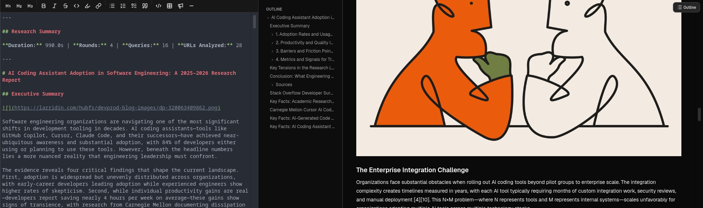
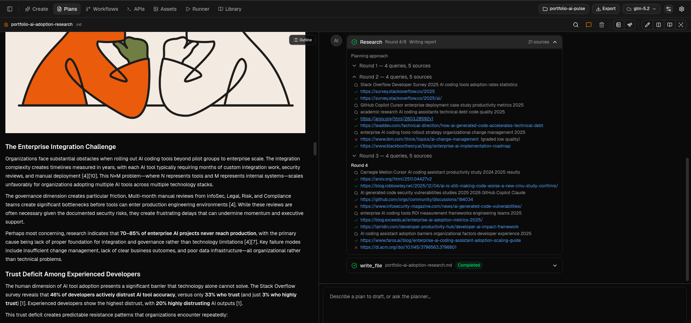
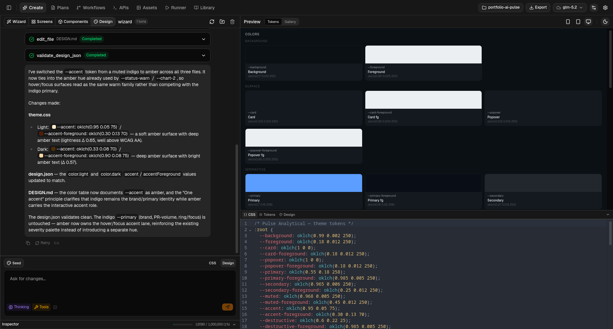
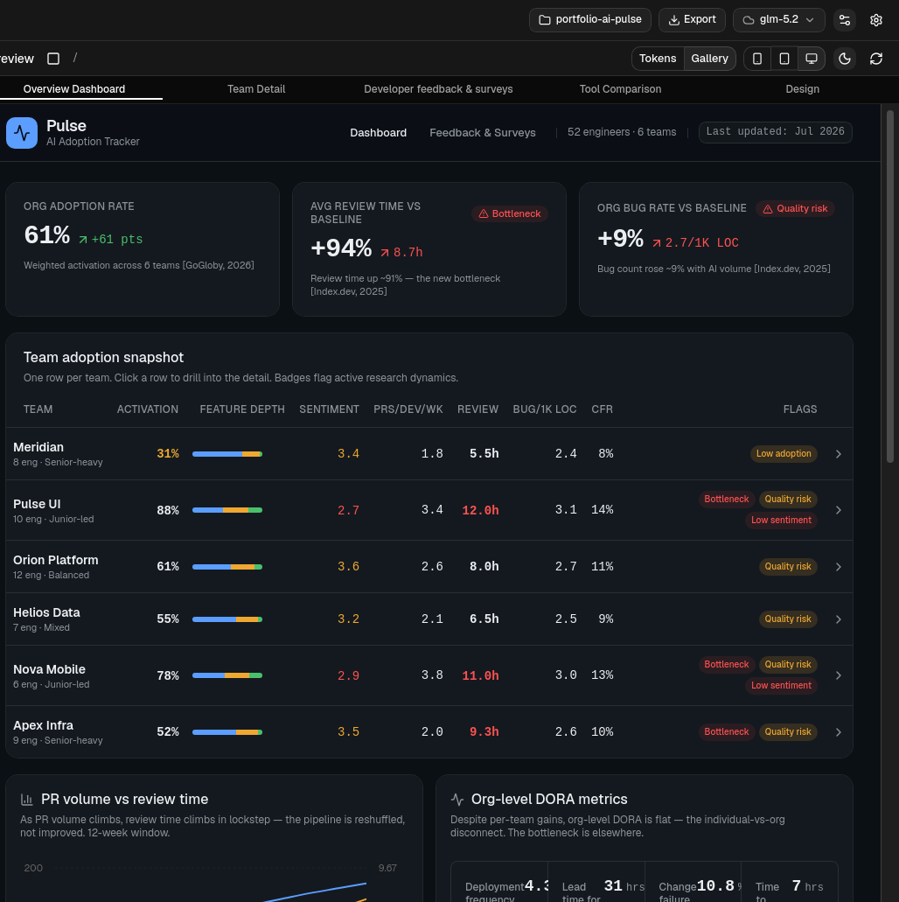
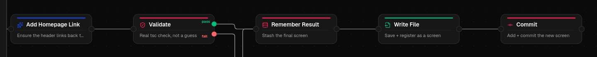
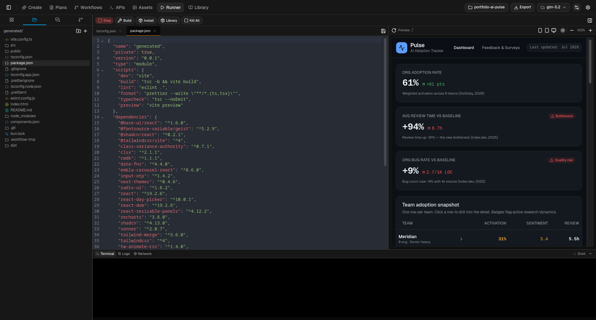
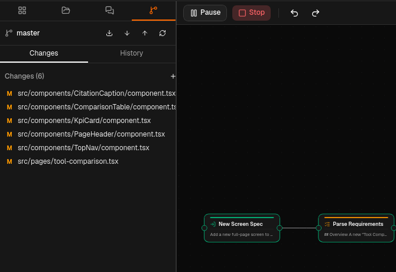
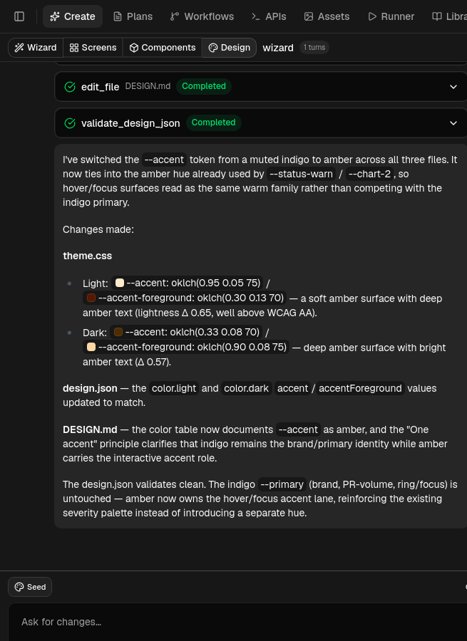

More features worth mentioning
Assets
Local image generation, fully offline
Runner
A real code editor with git integration
Library
Every component, cataloged and searchable
APIs
A mock & proxy layer screens can call
From concept to working software, fast, and at no cost.
Client asks and product ideas outpace the time we have to turn them into something people can click through
Every proof-of-concept competes for the same limited hours
By the time a prototype exists, the moment to validate it may have already passed
The first thing a client can click through sets the tone for the whole engagement
Symphony already competes on this with a 90 Client Net Promoter Score, and a product-build methodology built around "rapid validation of concepts" and "quick turnaround on prototypes." Prototyper is how we keep that promise before a client ever sees a deck.
A working prototype beats a slide, ready before the next client call
No engineering-hour pressure means we can throw away three ideas to find the one worth building
Real, tsc-validated code, built to survive a real question
A Tauri v2 desktop app that turns ideas into demonstrable prototypes, using AI agents as the build crew. React 19 + Rust. Seven surfaces. One agentic core.
Every stop on this tour runs through the same Rust-side agent loop: seven panels sharing 20 tools and 52 commands under one core.
Search, read, and cite: turned into one living document
A full design language, generated and validated
Build once, @-mention it everywhere after
A full app from one prompt, a 5-phase agent loop
Everything above, wired into repeatable pipelines
This is the real control flow in research_loop.rs, a bounded Rust loop: it asks what it doesn't know first, then plans queries, searches, grades every source, and re-synthesizes the report each round, up to a round and time budget set in Settings → Agents → Research (8 rounds / 5 minutes by default).
ask_user_form, 2–3 questions, skipped if already specificEvery non-obvious claim carries an inline citation, the bracketed numbers link straight back to the source URL the agent actually fetched and read. It's a real rich Markdown editor underneath: headings, tables, checklists, a live outline, and a live preview side by side. A scoping gate asks clarifying questions before the research loop even starts, and Plan mode keeps editing the same file over time instead of starting from a blank page.

The loop emits a ResearchPhase event over the streaming channel for every query and every fetch, each one carrying the round number, a running source count, and an outcome: accepted, rejected for low quality, or rejected on a failed fetch. A round makes several sequential LLM and network calls, so that granularity is what's on screen here: instead of one spinner for the whole round, the UI renders each step as the loop actually reaches it.

Describe the feeling you want, "confident fintech," "warm and playful," and the agent edits theme.css directly: color tokens, type scale, spacing, radii, shadow, motion, validated against a schema before it's applied. It's real CSS the whole time, visible and editable right next to it, never a black box.

Build a component once, a KPI card, a table row, a chart, in Components mode. Build a screen next and @-mention it in the chat: the agent imports the real component with real props, instead of regenerating a lookalike. This is the actual dashboard below, six live KPI tiles and a six-team table, built from exactly that pattern.
@-mention a component into a screen
Describe the app you want in a sentence. Wizard runs a real 5-phase loop: it asks only what actually changes the architecture, designs and validates a full design language before a single screen exists, proposes 3 to 5 screens and genuinely waits for pushback, then builds one screen at a time, rewriting the router after every single one so the live preview can already navigate the app while it's still being built.
Only asks when the answer meaningfully changes architecture, never for trivial calls
After 3 failed fixes on the same error, it asks you instead of looping forever
The router is rewritten after every screen, so the preview can navigate mid-generation
A node canvas that chains Research, Design, Components, Screens, even a full Wizard-style build, into a pipeline you can rerun on demand. It's a real DAG: a Validate node runs actual tsc, and only the branch that's actually taken, pass or fail, continues downstream, the other one is skipped outright. 32 node types across 7 categories cover generation, validation, branching, loops, and file and git operations, so a pipeline can write a file, register it as a screen, and commit it, unattended, end to end.


Local image generation, fully offline
A real code editor with git integration
Every component, cataloged and searchable
A mock & proxy layer screens can call
Every generated project is a real git repository from the moment it's scaffolded. A Workflow's Commit node, or a manual commit in Runner, shows the actual diff, file by file, exactly like this: six real components changed by one run. Nothing is a synthetic "version history" bolted on after the fact, it's the same git you'd use anywhere else, with full history and rollback.

Self-hosted, zero-cost models. Capabilities like thinking, vision, and tools are detected live from each model.
Higher-quality hosted models when the task is worth the spend, including extended thinking on Claude.
Every panel runs the same cycle underneath. The model streams its response over a Tauri Channel; the moment it wants to act, edit a file, run a shell command, fetch a URL, it emits a tool call, and that call stops at a permission gate: approve once, reject, or always-allow for the rest of the session. Only after that gate does the Rust side actually execute it and stream the real result back in, so the model keeps working from what actually happened. If it genuinely needs your input, ask_user or ask_user_form pauses the entire loop and waits, up to 180 seconds, for a real answer. And it's bounded by design: real iteration and write-file caps, so nothing spins forever.

Read, write, edit, grep, run a shell command: that's the common ground with any coding agent, OpenCode, Claude Code, the rest. Prototyper's 20 tools go further because the job is different, wiring a screen into an app, validating a design system, keeping a human in the loop on real decisions.
register_screenWires a generated page into the router and navigation, no manual step
validate_design_jsonSchema-checks a design language before it's ever allowed to apply
ask_user_formPops a real structured form mid-loop
set_active_themeSwitches the live design language the whole app is rendering with
task_listA visible, structured plan in the UI as the agent works
lspReal language-server intelligence powering it
From a one-line idea to a running prototype, in real time.
Mihajlo Miskarovski, AI-Driven Prototyping